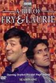

What is this site?
Stephen's Profile
Browser Extension
Stephen Klancher
Recent
Overall
Year Overview
Series
Lists
A Bit of Fry and Laurie
List contains: 26 items, 0.4 hours.
Seasons:
1
|
2
|
3
|
4
|
Title Search (4+ characters):
Group:
None
Example Group: Me and Stephen
Who's seen it:
No filter
Everyone
No One
Anyone
Anyone Has Not
Who's commented:
No filter
Everyone
No One
Anyone
Anyone Has Not
Netflix:
No Filter
Available for Instant Watch
Netflix Link Known
Netflix Link Unknown
Missing Data:
No Filter
Runtime
Season
Release Year (YYYY) or Decade (YYYx):
Sort:
Normal
Newest Episodes First
Episodes in Order
Recently Watched First
Watched in Order
Newest Releases First
Releases in Order
Stephen Klancher
...has seen 0
...has not seen 0.4 hours
Timeline

Season 1
Pilot (1987)
Airs on 1987-12-26
S1 - E0 of
A Bit of Fry and Laurie
Stephen Klancher
:
Episode 1 (1989)
Airs on 1989-01-13
S1 - E1 of
A Bit of Fry and Laurie
Stephen Klancher
:
Episode 2 (1989)
Airs on 1989-01-20
S1 - E2 of
A Bit of Fry and Laurie
Stephen Klancher
:
Episode 3 (1989)
Airs on 1989-01-27
S1 - E3 of
A Bit of Fry and Laurie
Stephen Klancher
:
Episode 4 (1989)
Airs on 1989-02-03
S1 - E4 of
A Bit of Fry and Laurie
Stephen Klancher
:
Episode 5 (1989)
Airs on 1989-02-10
S1 - E5 of
A Bit of Fry and Laurie
Stephen Klancher
:
Episode 6 (1989)
Airs on 1989-02-17
S1 - E6 of
A Bit of Fry and Laurie
Stephen Klancher
:
Season 2
Episode #2.1 (1990)
Airs on 1990-03-09
S2 - E1 of
A Bit of Fry and Laurie
Stephen Klancher
:
Episode #2.2 (1990)
Airs on 1990-03-16
S2 - E2 of
A Bit of Fry and Laurie
Stephen Klancher
:
Episode #2.3 (1990)
Airs on 1990-03-23
S2 - E3 of
A Bit of Fry and Laurie
Stephen Klancher
:
Episode #2.4 (1990)
Airs on 1990-03-30
S2 - E4 of
A Bit of Fry and Laurie
Stephen Klancher
:
Episode #2.5 (1990)
Airs on 1990-04-06
S2 - E5 of
A Bit of Fry and Laurie
Stephen Klancher
:
Episode #2.6 (1990)
Airs on 1990-04-13
S2 - E6 of
A Bit of Fry and Laurie
Stephen Klancher
:
Season 3
Episode #3.1 (1992)
Airs on 1992-01-09
S3 - E1 of
A Bit of Fry and Laurie
Stephen Klancher
:
Episode #3.2 (1992)
Airs on 1992-01-16
S3 - E2 of
A Bit of Fry and Laurie
Stephen Klancher
:
Episode #3.3 (1992)
Airs on 1992-01-23
S3 - E3 of
A Bit of Fry and Laurie
Stephen Klancher
:
Episode #3.4 (1992)
Airs on 1992-01-30
S3 - E4 of
A Bit of Fry and Laurie
Stephen Klancher
:
Episode #3.5 (1992)
Airs on 1992-02-06
S3 - E5 of
A Bit of Fry and Laurie
Stephen Klancher
:
Episode #3.6 (1992)
Airs on 1992-02-13
S3 - E6 of
A Bit of Fry and Laurie
Stephen Klancher
:
Season 4
Episode #4.1 (1995)
Airs on 1995-02-12
S4 - E1 of
A Bit of Fry and Laurie
Stephen Klancher
:
Episode #4.2 (1995)
Airs on 1995-02-19
S4 - E2 of
A Bit of Fry and Laurie
Stephen Klancher
:
Episode #4.3 (1995)
Airs on 1995-02-26
S4 - E3 of
A Bit of Fry and Laurie
Stephen Klancher
:
Episode #4.4 (1995)
Airs on 1995-03-05
S4 - E4 of
A Bit of Fry and Laurie
Stephen Klancher
:
Episode #4.5 (1995)
Airs on 1995-03-19
S4 - E5 of
A Bit of Fry and Laurie
Stephen Klancher
:
Episode #4.6 (1995)
Airs on 1995-03-26
S4 - E6 of
A Bit of Fry and Laurie
Stephen Klancher
:
Episode #4.7
Airs on 1995-04-02
S4 - E7 of
A Bit of Fry and Laurie
Stephen Klancher
:
Watched an episode not known by IMDb?
Season:
-
Episode:
Date:
Comment: